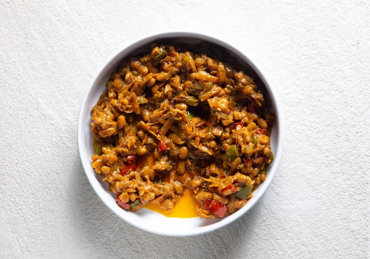

Chakalaka

Vibrant and spicy vegetable relish
Chakalaka is a vibrant and spicy vegetable relish that originates from South Africa and is popular across Southern Africa. It's a staple side dish, often served with bread, pap, rice, or meat, and it adds a burst of flavor, color, and spice to any meal. The ingredients can vary, but the base is typically made from vegetables like tomatoes, onions, and bell peppers, along with beans and spices.
Ingidients
- 2 T oil
- 1 onion, chopped
- ½ red, yellow and green pepper, chopped
- 1 t fresh ginger, grated
- 1 t garlic, crushed
- 2 t curry powder
- 4 carrots, grated
- 1 tomato, grated
- 1 t sugar
- sea salt and freshly ground black pepper, to taste
- 1 x 410 g can baked beans
- fresh coriander, for serving
Steps:
- Heat the oil in a pan and gently sauté the onion and peppers for 1 minute.
- Add the ginger, garlic and curry powder. Fry until fragrant. Add the carrots and sweat until soft, about 10 minutes.
- Add the tomato and sugar and season, then cook for a further 10 minutes.
- Turn off the heat, add the baked beans and stir to combine. Garnish with coriander to serve.